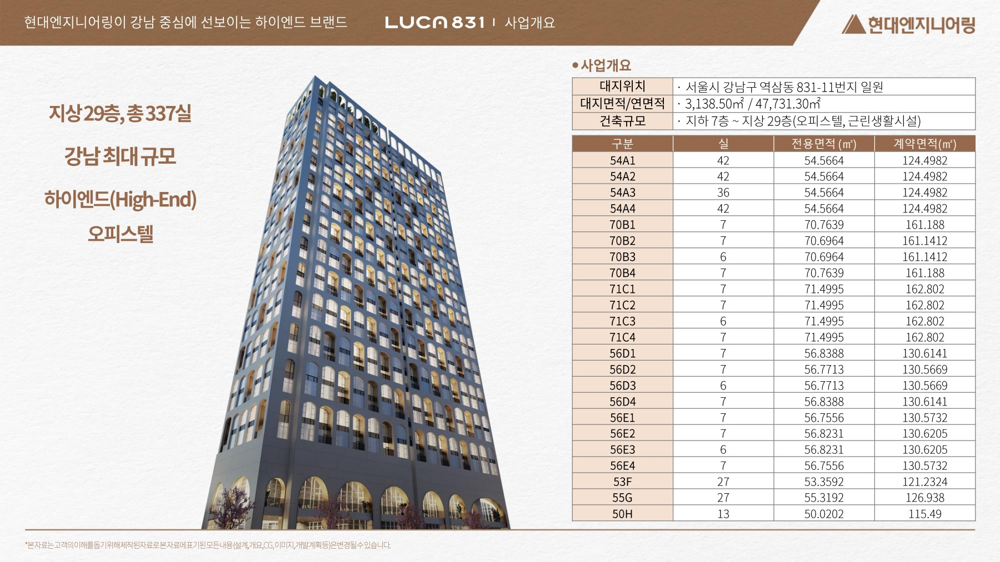
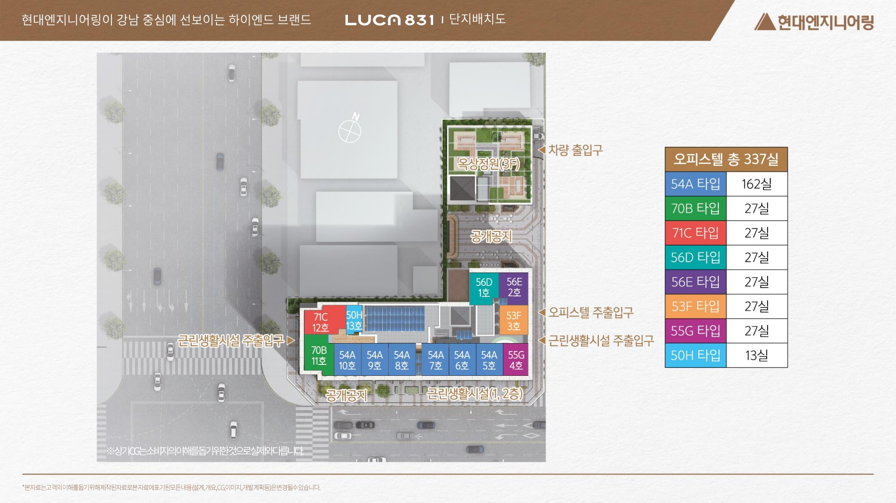
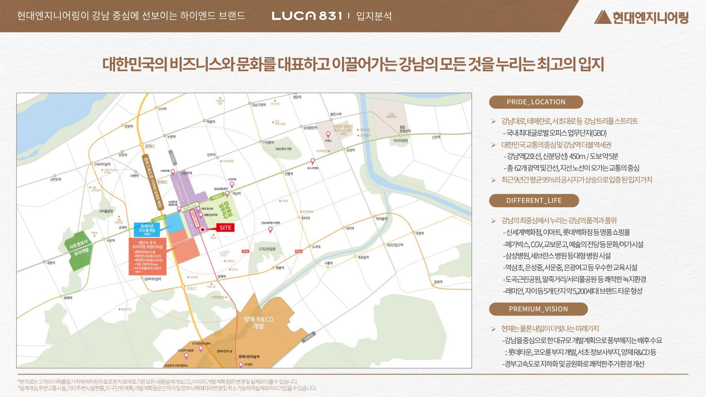

THE FIRST LAYERED HOUSE
LUCA 831
루카831강남의 일상에새로운 주거의 기준을 더하다.분양가: 14억대부터
건축규모지상 29층
전체 공급337실
전용면적50~71㎡
시공현대엔지니어링
PROJECT OVERVIEW
사업개요

- 현장명
- 루카831
- 현장 주소
- 서울특별시 강남구 역삼동 831-11번지 일원
- 건축규모
- 지하 7층 ~ 지상 29층 · 1개 동
- 공급규모
- 오피스텔 337실
- 대지면적
- 3,138.50㎡
- 연면적
- 47,731.30㎡
- 시공
- 현대엔지니어링
- 분양가
- 분양가: 14억대부터
동·호수 배치도

제공 교육자료 기준입니다. 현재 계약 가능한 호실과 실제 공급조건은 상담 시 확인해 주세요.
LOCATION
강남의 교통과 생활을 가까이
2호선·신분당선 강남역 도보권,
강남대로·테헤란로 업무지구 한가운데의 하이엔드 레지던스

교통 · 강남역 더블역세권
2호선·신분당선 강남역 도보 약 2~3분
신분당선 강남역 4번 출구 인근
강남대로·테헤란로 바로 연결
경부고속도로 서초IC 접근
업무지구 · 직주근접
강남대로 업무·상업 중심(GBD)
강남역 삼성타운 · 서초 법조타운
대기업 임원 사택·주재원 숙소 수요
쇼핑 · 문화 · 의료
신세계백화점 강남점 · 교보문고 · CGV·메가박스
예술의전당 · 국립중앙도서관
삼성서울병원 · 강남세브란스병원
교육 · 자연
역삼초 · 은성중 · 서운중 · 은광여고 인근
강남 8학군 · 학원 밀집 지역
도곡근린공원 · 말죽거리공원 · 서리풀공원
개발 호재
서초로 지구단위계획(롯데칠성·코오롱 부지 국제업무 복합개발)
옛 정보사 부지 오피스타운 · 양재 R&D
경부고속도로 지하화·공원 조성 추진
현장 주소서울특별시 강남구 역삼동 831-11번지 일원
교육자료 작성 시점의 입지 안내입니다. 계획 사업과 시설 운영, 실제 이동 거리는 관계기관과 현장에서 확인해 주세요.
UNIT PLAN
평면안내
교육자료 중 대표 평면 4종
타입 번호를 누르면 해당 도면이 열립니다.
제공 교육자료의 타입별 도면입니다. 실제 구조·면적·옵션과 적용 호실은 현장과 계약자료를 기준으로 확인해 주세요.
CUSTOMER CONTACT
관심고객 접수
성함과 연락처를 남겨주시면 안내해 드립니다.
루카831 관련 검색어
- 루카831
- LUCA831
- 역삼동 하이엔드 오피스텔
- 강남 오피스텔 분양
- 강남역 오피스텔
- 강남역 하이엔드 오피스텔
- 역삼동 오피스텔
- 강남역 루카831
- 신분당선 강남역 오피스텔
- 강남 인피니티풀 오피스텔
- 강남구 오피스텔 분양
- 루카831 분양가
- 루카831 모델하우스
- 루카831 평면도
루카831 분양 상담 · 대표번호 1688-5650